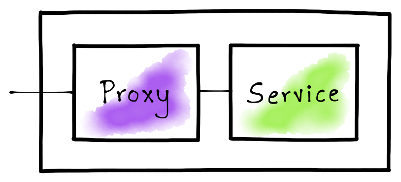
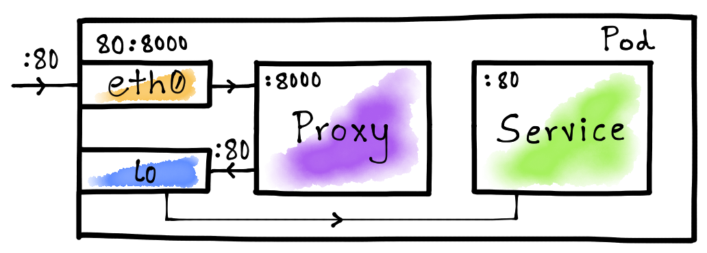

Hand-crafting a Sidecar Proxy like Istio
The sidecar proxy pattern is an important concept that lets Istio provide routing, metrics, security, and other features to services running in a service mesh. In this post I’ll explain key techniques that power Istio and I’ll also show you a way to build a simple HTTP traffic-sniffing sidecar proxy.

Introduction
Service mesh implementations generally rely on a sidecar proxy that lets them control, observe, and secure applications. The sidecar proxy is a reverse proxy and all traffic flows through it before reaching the destination service. The proxy analyzes this traffic and produces useful statistics, and provides flexible routing capabilities. The proxy can also secure application traffic using mTLS.

In this post, we’ll build a simple sidecar proxy that can sniff HTTP traffic and produce statistics such as request size, response status, etc. We’ll then deploy a HTTP service in a Kubernetes Pod, configure the sidecar proxy, and examine the generated statistics.
Building an HTTP Traffic-Sniffing Proxy
Istio relies on Envoy for proxying network traffic. The Envoy proxy is packaged as a container and deployed beside the service container in a single Pod. In this post, we’ll be building a miniscule proxy in Golang that can sniff HTTP traffic.
Our proxy needs to listen on a TCP port for incoming HTTP requests and then
forward those to a destination address. Since, in our case, both the proxy and
the service reside in the same container, the destination host can be addressed
via the loopback IP address (i.e. 127.0.0.1); however, we still need a port
number to identify the destination service.
const (
proxyPort = 8000
servicePort = 80
)
We can now define the base for the proxy. The proxy will listen to requests on
proxyPort and forward requests to the servicePort. The proxy will finally
print statistics after servicing each request.
// Create a structure to define the proxy functionality.
type Proxy struct{}
func (p *Proxy) ServeHTTP(w http.ResponseWriter, req *http.Request) {
// Forward the HTTP request to the destination service.
res, duration, err := p.forwardRequest(req)
// Notify the client if there was an error while forwarding the request.
if err != nil {
http.Error(w, err.Error(), http.StatusBadGateway)
return
}
// If the request was forwarded successfully, write the response back to
// the client.
p.writeResponse(w, res)
// Print request and response statistics.
p.printStats(req, res, duration)
}
func main() {
// Listen on the predefined proxy port.
http.ListenAndServe(fmt.Sprintf(":%d", proxyPort), &Proxy{})
}
The most important part for a proxy is its capability to forward requests. Let’s first define this functionality in our proxy implementation.
func (p *Proxy) forwardRequest(req *http.Request) (*http.Response, time.Duration, error) {
// Prepare the destination endpoint to forward the request to.
proxyUrl := fmt.Sprintf("http://127.0.0.1:%d%s", servicePort, req.RequestURI)
// Print the original URL and the proxied request URL.
fmt.Printf("Original URL: http://%s:%d%s\n", req.Host, servicePort, req.RequestURI)
fmt.Printf("Proxy URL: %s\n", proxyUrl)
// Create an HTTP client and a proxy request based on the original request.
httpClient := http.Client{}
proxyReq, err := http.NewRequest(req.Method, proxyUrl, req.Body)
// Capture the duration while making a request to the destination service.
start := time.Now()
res, err := httpClient.Do(proxyReq)
duration := time.Since(start)
// Return the response, the request duration, and the error.
return res, duration, err
}
Now that we have the response from the proxied request, let’s define the logic to write it back to the client.
func (p *Proxy) writeResponse(w http.ResponseWriter, res *http.Response) {
// Copy all the header values from the response.
for name, values := range res.Header {
w.Header()[name] = values
}
// Set a special header to notify that the proxy actually serviced the request.
w.Header().Set("Server", "amazing-proxy")
// Set the status code returned by the destination service.
w.WriteHeader(res.StatusCode)
// Copy the contents from the response body.
io.Copy(w, res.Body)
// Finish the request.
res.Body.Close()
}
The final part for the proxy is to print statistics. Let’s go ahead and implement that.
func (p *Proxy) printStats(req *http.Request, res *http.Response, duration time.Duration) {
fmt.Printf("Request Duration: %v\n", duration)
fmt.Printf("Request Size: %d\n", req.ContentLength)
fmt.Printf("Response Size: %d\n", res.ContentLength)
fmt.Printf("Response Status: %d\n\n", res.StatusCode)
}
We have now built a fully functional HTTP traffic-sniffing proxy.
Build a Container Image for the Proxy
Istio packages Envoy and runs it as a container beside the service container. Let’s build a proxy container image that runs the above Go code to replicate Istio’s behavior.
# Use the Go v1.12 image for the base.
FROM golang:1.12
# Copy the proxy code to the container.
COPY main.go .
# Run the proxy on container startup.
ENTRYPOINT [ "go" ]
CMD [ "run", "main.go" ]
# Expose the proxy port.
EXPOSE 8000
To build the proxy container image, we can simply issue the following Docker command.
$ docker build -t venilnoronha/amazing-proxy:latest -f Dockerfile .
Setting up the Pod Network
We need to set up the Pod network to ensure that the sidecar proxy receives all application traffic so that it can analyze and forward it to the required destination. One way to achieve that is to ask the user to configure all the client services to point to the proxy port while the proxy points to the service port. This complicates the user experience. A better and a more transparent way to achieve this is by using the Netfilter/iptables component from the Linux kernel.
Kubernetes Networking 101
To understand it better, let’s list the network interfaces exposed by Kubernetes to a Pod.
$ kubectl run -i --rm --restart=Never busybox --image=busybox -- sh -c "ip addr"
1: lo: <LOOPBACK,UP,LOWER_UP> mtu 65536 qdisc noqueue qlen 1000
link/loopback 00:00:00:00:00:00 brd 00:00:00:00:00:00
inet 127.0.0.1/8 scope host lo
valid_lft forever preferred_lft forever
174: eth0@if175: <BROADCAST,MULTICAST,UP,LOWER_UP,M-DOWN> mtu 1500 qdisc noqueue
link/ether 02:42:ac:11:00:05 brd ff:ff:ff:ff:ff:ff
inet 172.17.0.5/16 brd 172.17.255.255 scope global eth0
valid_lft forever preferred_lft forever
As you observe, a Pod gets access to at least 2 network interfaces i.e. lo and
eth0. Interface lo stands for loopback and eth0 for ethernet. A thing to
note here is that these are virtual and not real interfaces.
Port Mapping With iptables
A simplest use for iptables is to map one port to another. We can leverage
this to transparently route traffic to our proxy. Istio uses this exact concept
to set up its Pod networking.

The idea here is map the service port (80) on the eth0 interface to the
proxy port (8000). This will ensure that the traffic from outside the
container is routed to the proxy whenever it tries to access the service via
port 80. We let the lo interface to route Pod-internal traffic directly to
the destination service i.e. without the hop to the proxy as shown in the above
diagram.
The Init Container
Kubernetes let’s you run init containers prior to running regular containers
in a Pod. Istio uses an init container to set up the Pod networking in order to
set up the necessary iptables rules. Let’s do the same to route Pod-external
traffic to the proxy.
#!/bin/bash
# Forward TCP traffic on port 80 to port 8000 on the eth0 interface.
iptables -t nat -A PREROUTING -p tcp -i eth0 --dport 80 -j REDIRECT --to-port 8000
# List all iptables rules.
iptables -t nat --list
We can now create a Docker container with this initialization script.
# Use the latest Ubuntu image for the base.
FROM ubuntu:latest
# Install the iptables command.
RUN apt-get update && \
apt-get install -y iptables
# Copy the initialization script into the container.
COPY init.sh /usr/local/bin/
# Mark the initialization script as executable.
RUN chmod +x /usr/local/bin/init.sh
# Start the initialization script on container startup.
ENTRYPOINT ["init.sh"]
To build the Docker image, we execute the following command.
$ docker build -t venilnoronha/init-networking:latest -f Dockerfile .
The Demo
We’ve built a proxy and an init container to set up Pod networking. It’s now time to put this to a test. For this, we’ll be using the httpbin container as the service.
The Deployment
Istio automatically injects the init container as well as the proxy. However, for our experiment, we can manually craft the Pod yaml.
apiVersion: v1
kind: Pod
metadata:
name: httpbin-pod
labels:
app: httpbin
spec:
initContainers:
- name: init-networking
image: venilnoronha/init-networking
securityContext:
capabilities:
add:
- NET_ADMIN
privileged: true
containers:
- name: service
image: kennethreitz/httpbin
ports:
- containerPort: 80
- name: proxy
image: venilnoronha/amazing-proxy
ports:
- containerPort: 8000
We’ve set up the init container with root privileges and have configured the
proxy and the service as regular containers. To deploy this on a Kubernetes
cluster, we can issue the following command.
$ kubectl apply -f httpbin.yaml
The Test
To test the deployment, let’s first identify the ClusterIP for the Pod. To do
so, we can execute the following command.
$ kubectl get pods -o wide
NAME READY STATUS RESTARTS AGE IP NODE
httpbin-pod 2/2 Running 0 21h 172.17.0.4 minikube
We now need to generate traffic from outside the Pod. For this purpose, I’ll
be using the busybox container to issue HTTP requests via curl.
Let’s first send a GET request to the httpbin service.
$ kubectl run -i --rm --restart=Never busybox --image=odise/busybox-curl \
-- sh -c "curl -i 172.17.0.4:80/get?query=param"
HTTP/1.1 200 OK
Content-Length: 237
Content-Type: application/json
Server: amazing-proxy
Let’s now send a POST request.
$ kubectl run -i --rm --restart=Never busybox --image=odise/busybox-curl \
-- sh -c "curl -i -X POST -d 'body=parameters' 172.17.0.4:80/post"
HTTP/1.1 200 OK
Content-Length: 317
Content-Type: application/json
Server: amazing-proxy
Let’s finally send a GET request to the /status endpoint.
$ kubectl run -i --rm --restart=Never busybox --image=odise/busybox-curl \
-- sh -c "curl -i http://172.17.0.4:80/status/429"
HTTP/1.1 429 Too Many Requests
Content-Length: 0
Content-Type: text/html; charset=utf-8
Server: amazing-proxy
Note that we send the request to port 80 i.e. the service port and not the
proxy port. The iptables rules ensure that this gets routed to the proxy first
which then forwards the request to the service. Also, we see the extra header
Server: amazing-proxy which we had added in our proxy implementation.
Proxy Statistics
Let’s now peek into the statistics produced by the proxy. To do so, we can run the following command.
$ kubectl logs httpbin-pod --container="proxy"
Original URL: http://172.17.0.4:80/get?query=param
Proxy URL: http://127.0.0.1:80/get?query=param
Request Duration: 1.979348ms
Request Size: 0
Response Size: 237
Response Status: 200
Original URL: http://172.17.0.4:80/post
Proxy URL: http://127.0.0.1:80/post
Request Duration: 2.026861ms
Request Size: 15
Response Size: 317
Response Status: 200
Original URL: http://172.17.0.4:80/status/429
Proxy URL: http://127.0.0.1:80/status/429
Request Duration: 1.191793ms
Request Size: 0
Response Size: 0
Response Status: 429
As you observe, we do see that the results from the proxy match to the requests we generated.
Conclusion
We implemented a simple HTTP traffic-sniffing proxy, which we wired in a
Kubernetes Pod using the init container. We also looked at how iptables can
provide flexible networking in order to provide a great user experience when
dealing with proxies. Above all, we’ve learnt some key concepts that form Istio
to what it is today.
If you’d like me to write about a particular topic in the service mesh domain, then feel free to reach out to me.
Disclaimer: My postings are my own and don’t necessarily represent VMware’s positions, strategies or opinions.